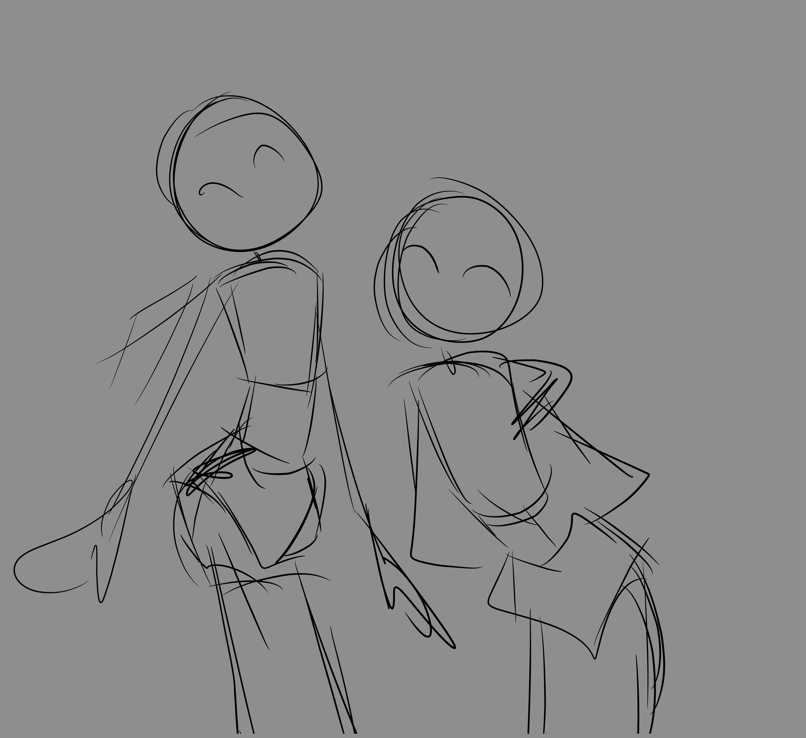
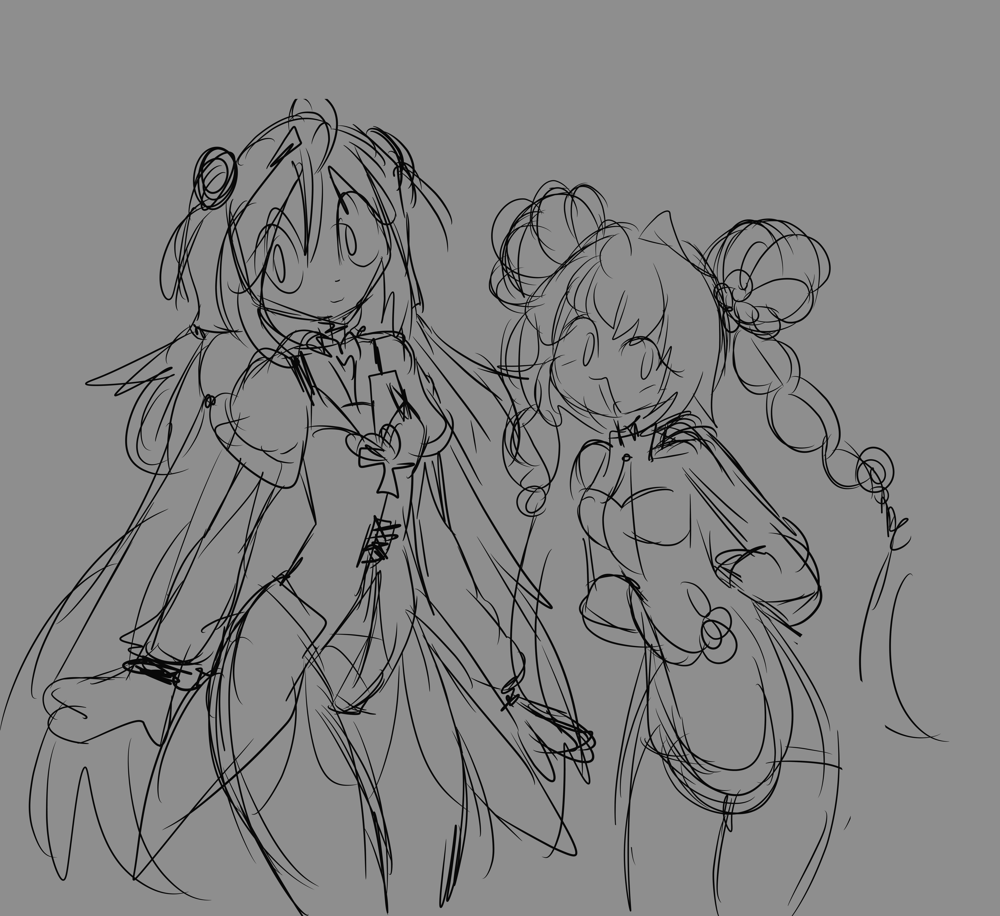
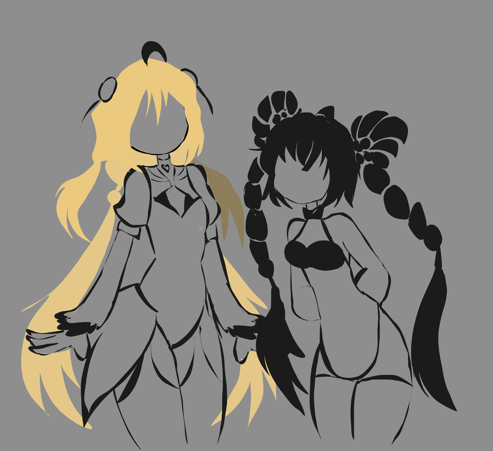
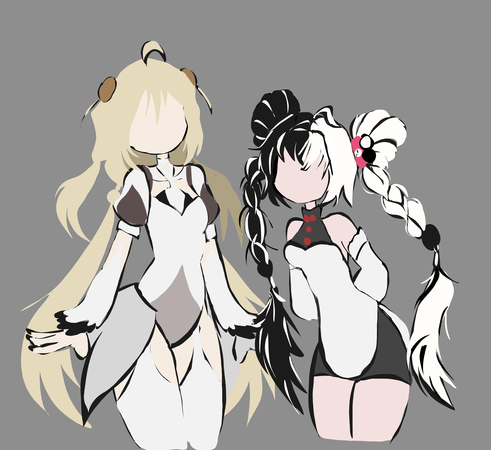
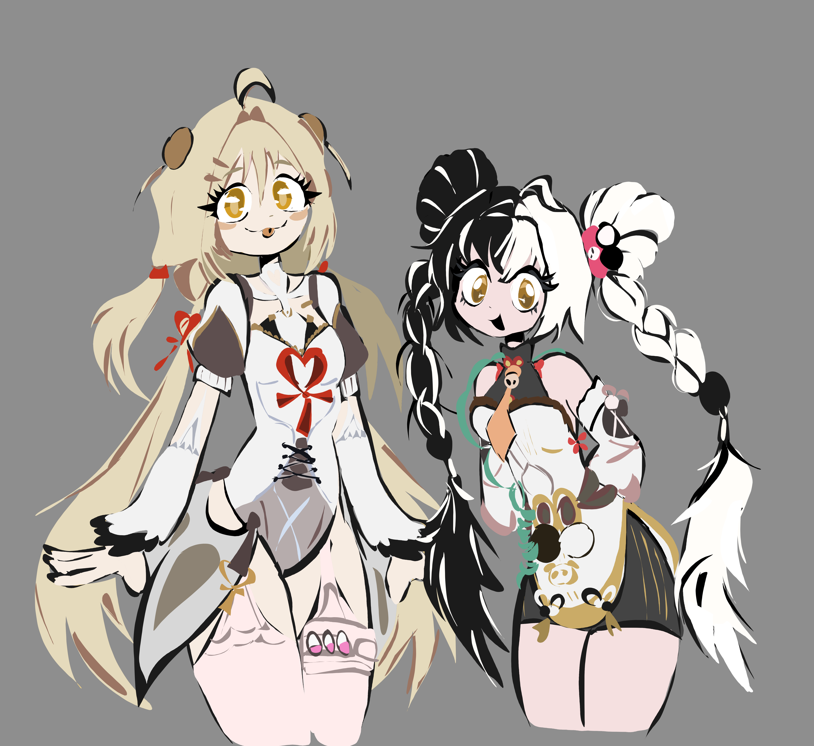
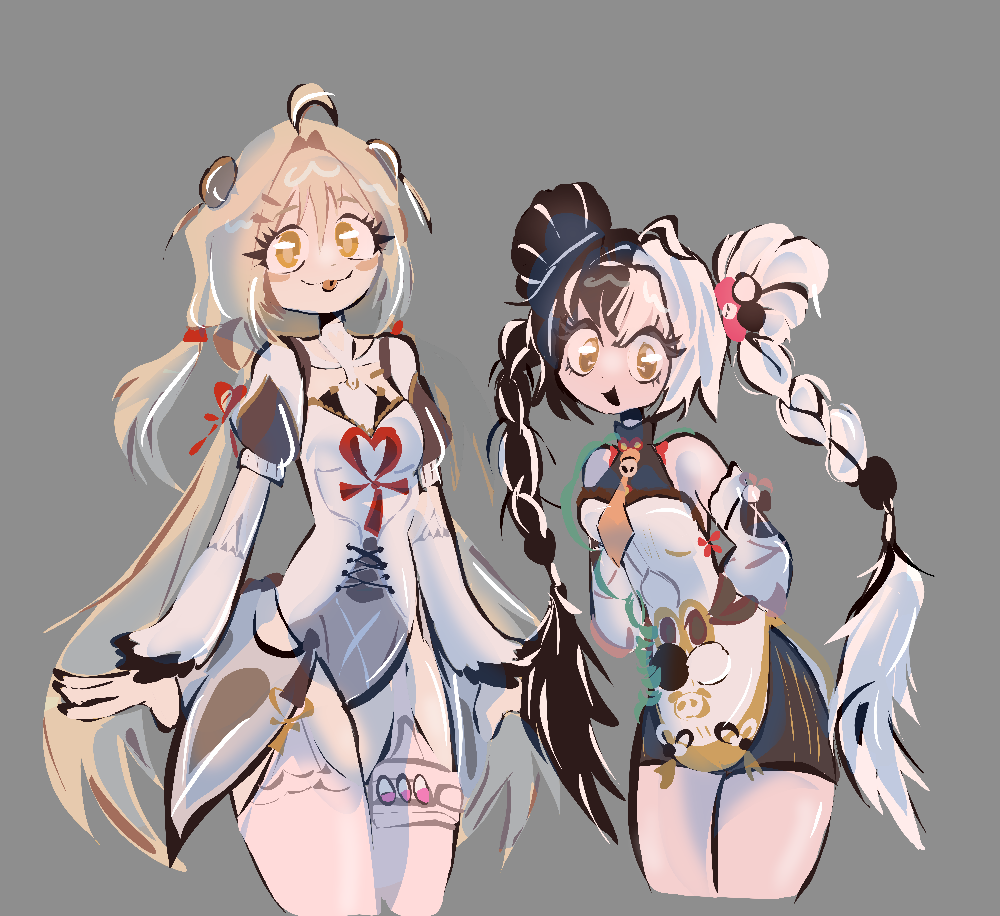
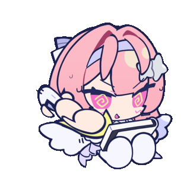

01. SKETCH
Aqui solo hago la estructura base de los cuerpos de los personajes para tener una idea de como quiero el resultado final.

Este espacio es para ver como se realiza el proceso de un dibujos ilustrado digitalmente.

Aqui solo hago la estructura base de los cuerpos de los personajes para tener una idea de como quiero el resultado final.

Definimos el cuerpo, el rostro la ropa, el cabello y los Detalles de el personaje.

Se aplica la linea definida para el dibujo.

En este paso hago un color base muy plano y de algunos detalles de vestimenta de los personajes.

Hago los ojos, separaciones del cabello, pequeños detalles de la ropa y me fijo que se vea limpio.

Aplico profundidad a mis dibujos con luces y sombras muy planas.
Cada ilustración realizada por mi refleja dedicación y pasión por la creación digital.
